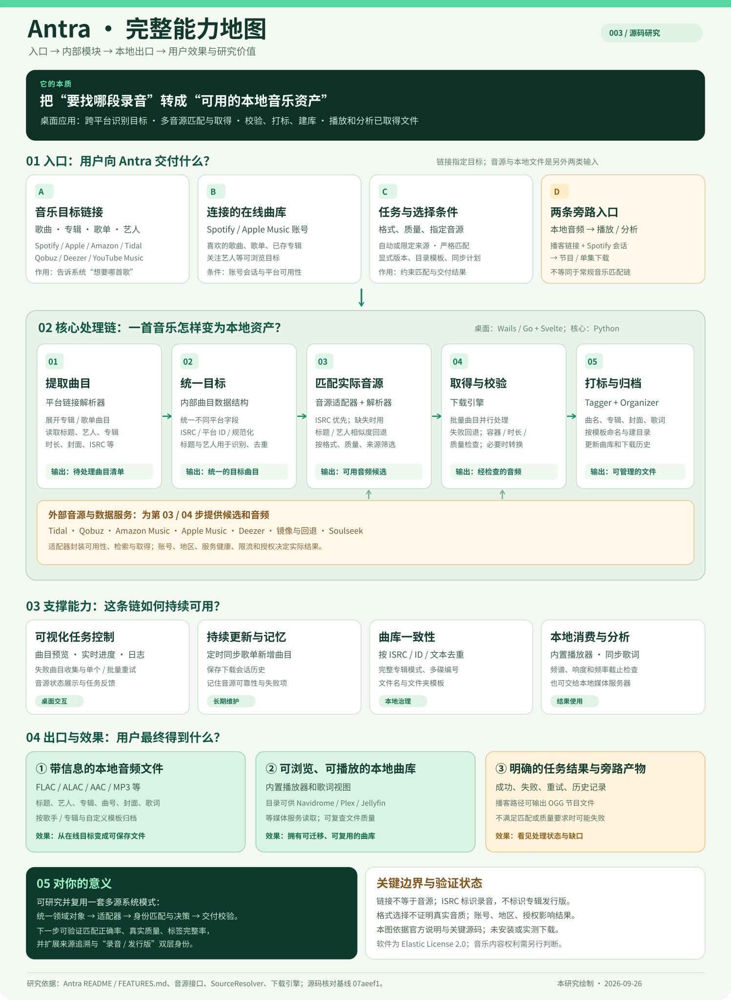

音乐链接
告诉程序你想找哪首歌、哪张专辑或哪个歌单。
识别目标完整能力地图 · 一图读懂
Antra 将平台链接与账号曲库转成统一曲目目标，再由音源适配器和解析器寻找匹配录音，经过下载校验、打标与归档交付本地文件。这张图同时展示入口、模块、出口、使用场景、研究价值与边界。

输入链接用于确定目标曲目，实际文件由可用音源提供。
解析器综合录音匹配、格式要求、质量与音源状态选候选。
下载引擎负责批量任务、失败回退、文件校验与必要的格式转换。
先分清四个角色
告诉程序你想找哪首歌、哪张专辑或哪个歌单。
识别目标适配器寻找对应录音；音频可能来自另一个可用平台。
取得文件校验、打标签、存封面与歌词，按歌手和专辑归档。
长期整理打开已取得的本地文件，也可以交给 Navidrome 等服务。
使用成果概念流程 · 无真实请求
下面只改变说明文字。它不会寻找歌曲，也不会预言某个平台一定有音频。
示意输入不包含真实歌曲、账号或下载地址。真实结果取决于匹配、音源可用性和授权。
展开 Spotify 歌单，获取其中曲目的标题、艺人等元数据。
优先参考 ISRC；缺失时比较标题、艺人和时长。匹配失败时应停止或尝试其他候选。
按配置与质量偏好查询可用适配器，结果可能来自链接所属平台之外。
检查文件，必要时转换格式；写入标签、封面和歌词，再放入本地曲库。
自动模式优先选择可用的较高质量来源；没有符合条件的结果时可能失败。
流程依据：Antra 功能说明、音源解析器与下载引擎。
能力总览
接收歌曲、专辑、歌单和艺人链接，生成待处理曲目。
连接 Spotify 或 Apple Music 账号，浏览喜欢的歌曲、歌单与已存专辑等目标。
用 ISRC 和文本信息匹配录音，按优先级与质量选择候选。
设置无损或有损格式，检查下载文件的容器、时长与质量信息。
补充封面、歌词、专辑等信息，并按模板整理文件。
并行处理歌单曲目，按计划补充歌单中新出现的歌曲。
在内置播放器听歌，或把曲库交给自己的媒体服务器读取。
通过 Spotify 账号会话取得播客单集或节目，按独立路径保存 OGG 文件。
研究结论
同一录音可能出现在不同专辑版本中。研究再版与专辑归属还要看发行信息。ISRC 官方说明 ↗
解析器按适配器顺序查找；歌单线程池让不同曲目同时处理。查看源码 ↗
FLAC 容器和高位深声明仍需核对实际来源与文件；无合适音源时任务会失败。查看校验代码 ↗
使用场景与研究方向
将想保存的歌曲或歌单整理为可在本地使用的文件，重点核对取得权限、实际来源、质量与标签。
利用定时同步补充新曲目，持续观察账号会话、重复版本和音源失效。
把适配器、匹配、优先级、限流和回退作为一套可分析的工程案例。
用 ISRC 识别录音，同时保存专辑 ID、UPC/EAN、碟号等信息，减少去重误伤。
记录输入链接、匹配依据、实际音源、文件质量、标签结果和每次回退原因。
选少量有权测试的曲目，比较录音匹配、下载完成、标签完整与耗时。
已核对官方说明、许可证和关键源码；没有安装软件或运行真实下载，因此这里没有成功率、音质或平台兼容性的实测数字。
原项目采用 Elastic License 2.0。软件许可与音乐内容的取得权限分别判断；具体使用还需遵守相应平台条款。